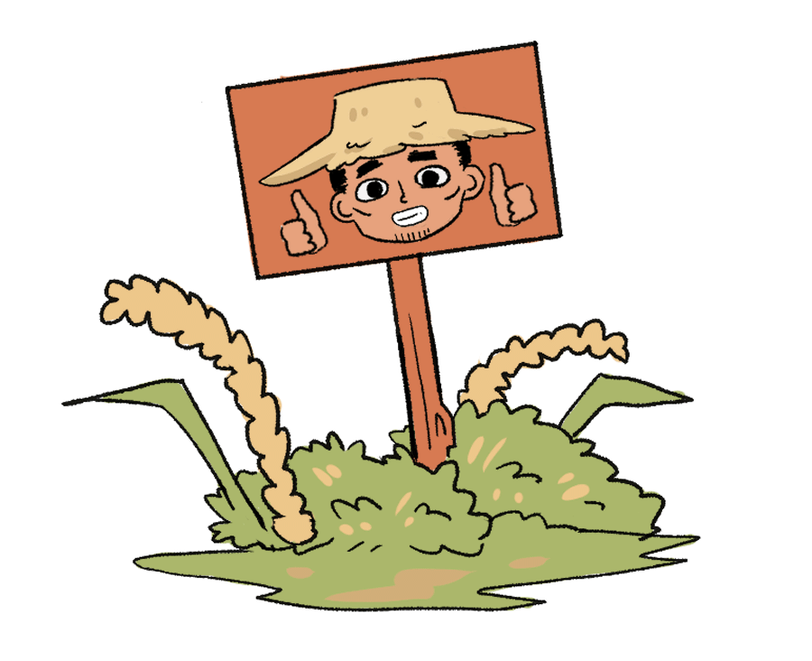
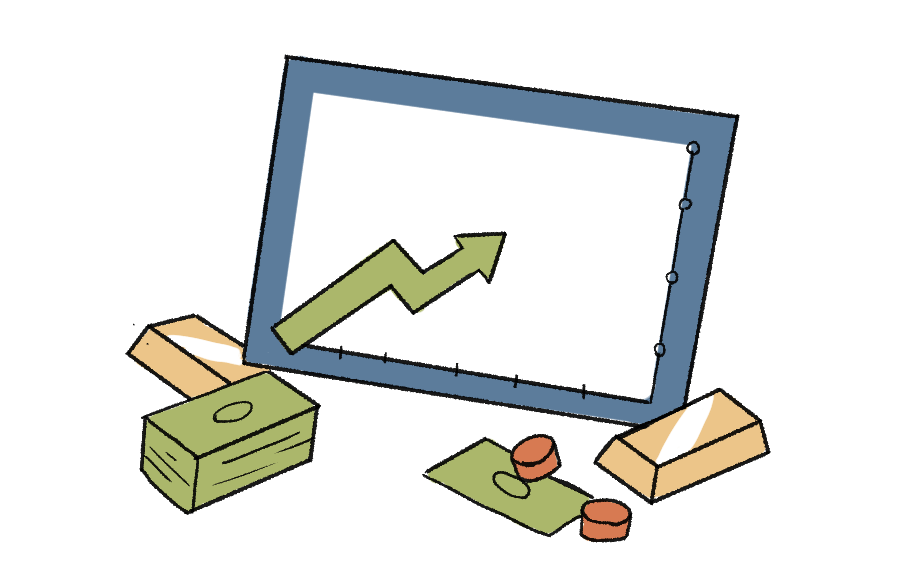
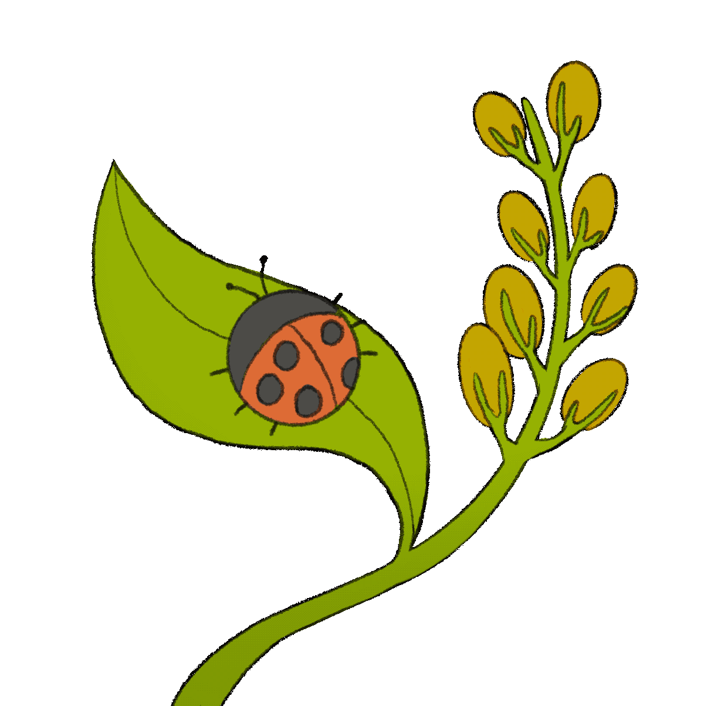
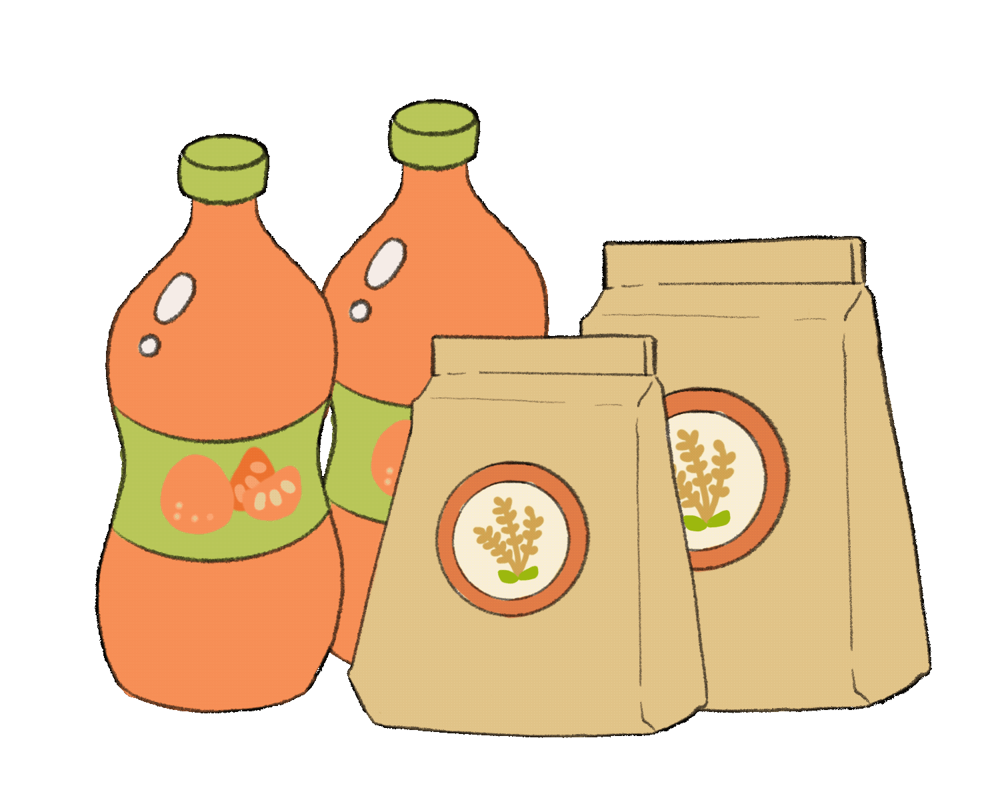
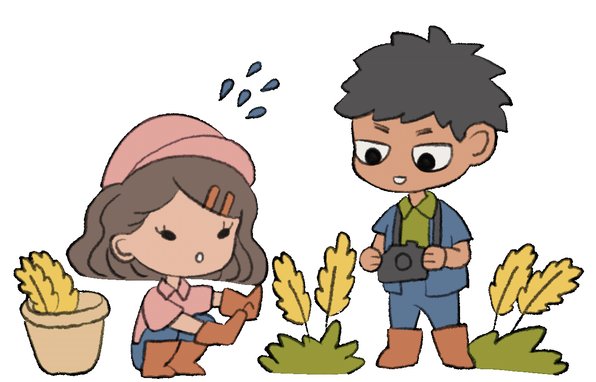

-
แนวทางการแก้ไขปัญหา
ปัญหาที่ดิน
ยุติข้อพิพาทระหว่างรัฐกับประชาชนที่ต้องการมีที่ดิน
ให้รัฐช่วยออกแบบนโยบายในการบริหารจัดการพื้นที่เกษตร
ออกกรรมสิทธิ์ที่ดินเพื่อกระจายการถือครอง
และช่วยลดการกว้านซื้อจากนายทุน -

หนี้สิน
ในปัจจุบันการกู้เงินในธนาคารระบบทุนนิยมของเกษตรกร
ต้องเสียภาษีถึง 20 เปอร์เซ็นต์ต่อเดือน
ให้แก้ปัญหาโดยใช้ระบบเครดิตทางเลือก
จากระบบบิ๊กดาต้าและระบบดิจิทัล
ซึ่งทำให้รู้รายจ่ายของเกษตรกร ค่าไฟ ค่าประปา ย้อนหลังสิบปี
เมื่อนำข้อมูลเหล่านั้นมาเข้าสู่ระบบจะทำให้รู้
แพทเทิร์นในการใช้จ่ายเพิ่มเครดิตให้แก่เกษตรกร
และสามารถที่จะปล่อยกู้ได้ -

สารเคมี และ
การประกันสินค้านโยบาย Green China มีจุดประสงค์ในการลดสารเคมี
ภายในภาคการเกษตร 10% โดยการตั้งธนาคารชีวภาพ
ที่มีการสนับสนุนการใช้สมุนไพร เป็นตำรับมากกว่า 90 ตำรับ
และมีสินค้ามากกว่า 2,500 กว่าสินค้า
ซึ่งประเทศจีนเป็นประเทศที่ไทยนำเข้าสารเคมี
ทางการเกษตรมากที่สุด
รัฐบาลต้องคอยระวังเรื่องการคอรัปชั่นที่อาจจะเกิดขึ้นได้
เช่น สิทธิ์มี 10 ไร่ สวมสิทธิ์เป็น 20 ไร่
ความเหลื่อมล้ำในการชดเชย ตัวอย่างเช่น ถ้าเกษตรกร
เช่าที่ดินทำแล้วไม่มีสัญญาในการเช่าจะมีโอกาสจะ
ได้รับเงินชดเชยจากรัฐหรือไม่ -

การแปรรูปสินค้าทางการเกษตร
และนวัตกรรมการเกษตรเนื่องจากต้นทุนในการแปรรูปสินค้าทางการเกษตร
และนวัตกรรมนั้นต้องใช้ต้นทุนสูงรวมกับหนี้สินที่
เกษตรกรมักจะมีด้วยแล้วทำให้เกษตรกรไม่มีเงินทุน
เพื่อใช้ในการแปรรูปสินค้าหรือหานวัตกรรมใหม่ ๆ
มาปรับใช้จึงต้องเริ่มแก้ปัญหาจากปัญหาที่ดินและหนี้สิน
รัฐควรมีมาตราการช่วยเหลือการประกันราคา
เสนอเครดิตทางเลือกเพื่อลดค่าใช้จ่ายและ
ให้เกษตรกรสามารถกู้ยืมเงินได้โดยไม่ต้องกลัว
ค่าภาษีที่สูงเกินไป -

การท่องเที่ยวเชิงเกษตร
ต้องเริ่มแก้ปัญหาทางด้านที่ดินที่เกษตรกรไม่มีที่ดินทำกินเป็นของตัวเองก่อนโดยให้
ทางรัฐช่วดจัดสรรที่ดินและยับยั้งการกว้านซื้อที่จากนายทุน เมื่อเกษตรกรมีที่ดิน
เป็นของตัวเองแล้วควรส่งเสริมให้เกิดการท่องเที่ยวทางเกษตร เพื่อเป็นการพัฒนาพื้นที่
การเกษตร ส่งเสริมให้เกษตรกรมีทางเลือกและเพิ่มรายได้จากการท่องเที่ยวให้กับ เกษตรกร
และยังช่วยเสริมสร้างความรู้ให้กับประชากรช่วยในการอนุรักษ์ อาชีพเกษตรกรรมในระยะยาว